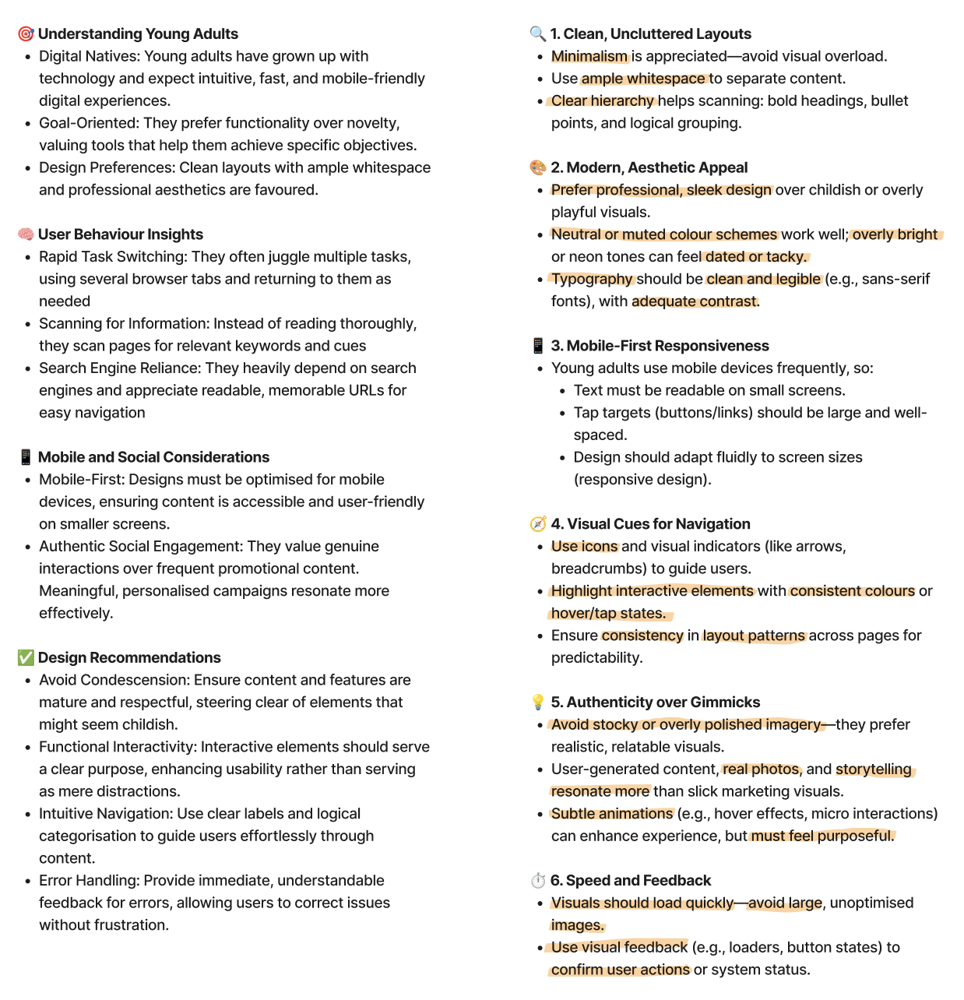

Target audience UI needs
 media.nngroup.comI started with looking into what my target audiences needs and patterns were when it came to UI, I gathered the most valuable information and then used AI to provide simplified bulleted lists so I could both reference this later and to also keep this information in mind when deciding on a visual style.